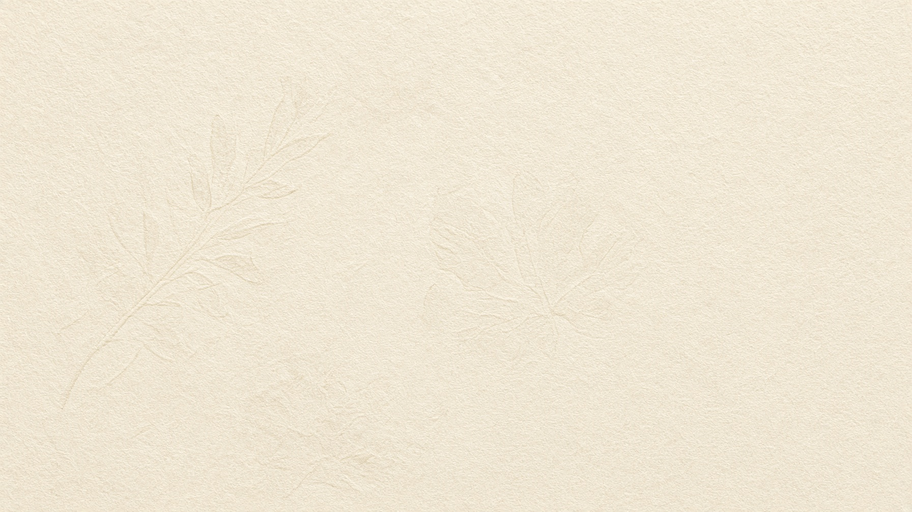
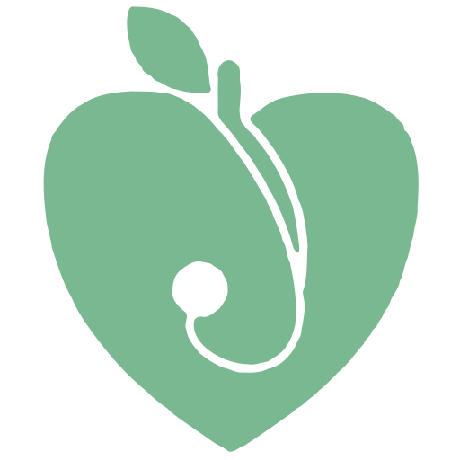

Bono regalo
5
sesiones de nutrición médica
Un acompañamiento personalizado para cuidar la salud.

Consulta de nutrición médica en Santander
El ritmo de vida, el exceso de consejos y las prisas hacen difícil alimentarse bien. En consulta estudiamos tu caso —no un modelo genérico— y construimos un plan que se pueda sostener.
Calle Juan de la Cosa 15, 1ºD · 648 125 035
Bonos regalo
Un detalle con el logotipo de la consulta. Personalízalo, descárgalo e imprímelo, o pídelo listo para entregar.
Cómo trabajo
Historia clínica, analíticas y un diagnóstico nutricional antes de cualquier pauta.
Escucha, acompañamiento y un plan adaptado a tu edad, gustos y vida real.
Alimentación y movimiento como pilares, sin trucos ni promesas imposibles.
Sobre la doctora
Licenciada en Medicina por la Universidad de Cantabria. Experta en Nutrición y Planificación Dietética por la UCM. El retrato y la trayectoria están en Sobre mí; aquí el trabajo de la consulta.
Conóceme